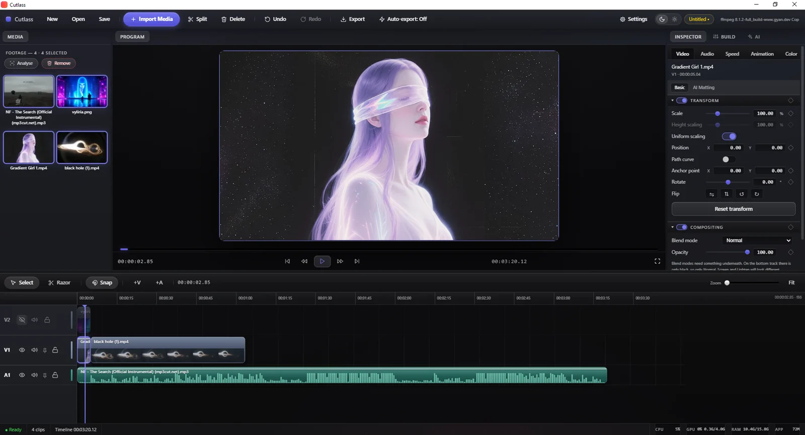
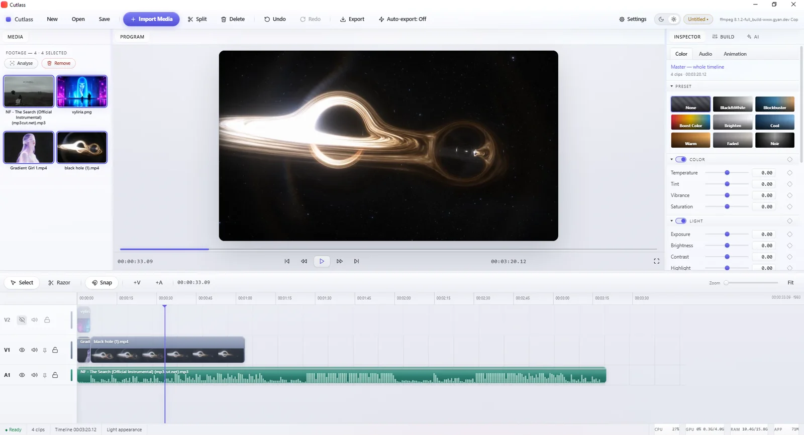
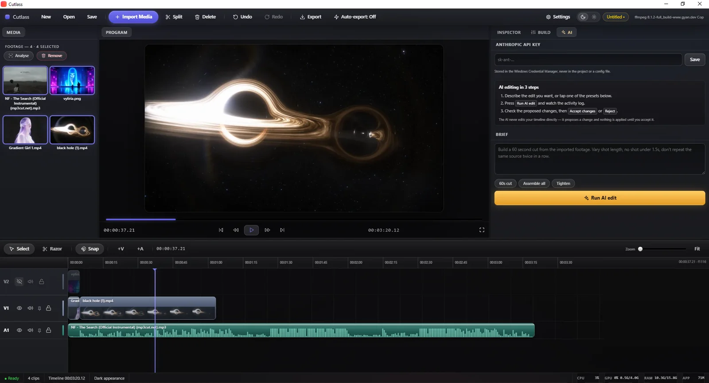
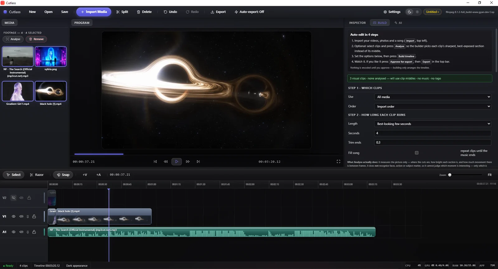

Desktop video editor Built from scratch
Cutlass — the AI and the
editor hold the same controls.
An AI-first desktop video editor. Not an AI panel bolted onto someone else's app, and not a wrapper that fakes clicks — my own editor, my own Rust core, where the AI and I reach for the exact same controls. It already cuts, trims, grades and exports; I'm holding the release until the AI is trained across several editing styles.
The idea
One set of controls, two operators.
Every edit in Cutlass — split, trim, move, grade, delete — is a single command in one registry. The interface fires those commands. The AI fires the very same ones. There is no second, private path for the machine. So anything I can do, it can do; anything it does, I can undo.
That one decision is the whole product. Undo, history, scripting and true AI parity all fall out of it — instead of being four features bolted on afterwards.
The human
Clicks a button, drags a clip, types a value in the inspector.
The AI
Calls the same commands as tools — no screen-scraping, no puppeteering.

A real editor first
It has to be good with the AI switched off.
Multi-track timeline, razor and snap, a program monitor, and an inspector with transform, compositing, speed and animation. Everything a person needs to cut a video by hand — because you can't fix the AI's mistakes without a real editor, and an editor that's only good when the AI is good is a toy.

Grading
One-tap looks, or every dial by hand.
Grade presets for a fast pass — then temperature, tint, vibrance, exposure, contrast and highlights underneath when you want to place it exactly. The same controls the AI can reach, so a look it applies is one you can nudge afterwards.

The AI Director
Describe the edit. Review the result.
Write a brief — "build a 60-second cut, vary shot length, don't repeat a source" — and the Director plans and builds it with the same commands. Crucially, it never touches your live timeline: it proposes a changeset you accept or reject, clip by clip. It can be wrong without being dangerous, which is what makes autonomy shippable.

No key required
A deterministic auto-edit, no AI needed.
There's a second path that needs no API key at all: pick the clips, a length rule and a trim, press build. An Analyse pass scores each shot for sharpness, exposure and motion, so it cuts on the best part of a clip, not the middle. Same seed, same result, every time.
Where it stands
Finished enough to use — held back on purpose.
Cutlass already works like any other editor. The reason it isn't out is not that it's broken; it's that the goal is bigger than "an editor with an AI button".
✓ Usable today
Import, cut, grade, auto-build and export all work, on a mid-range machine.
✓ Built from scratch
My own Rust core and interface. No forked editor, no borrowed codebase.
◷ In training
Teaching the AI several distinct editing styles, not one generic cut.
◈ The aim
An editor that automates the whole job — genuinely unique, and problem-solving.
Why there's no download here. A tool that edits for you is only worth shipping once it edits well across styles. I'd rather hold it until that's true than release one more AI gimmick.
Want a closer look?
Happy to walk through the architecture, the command bus, or a live edit.